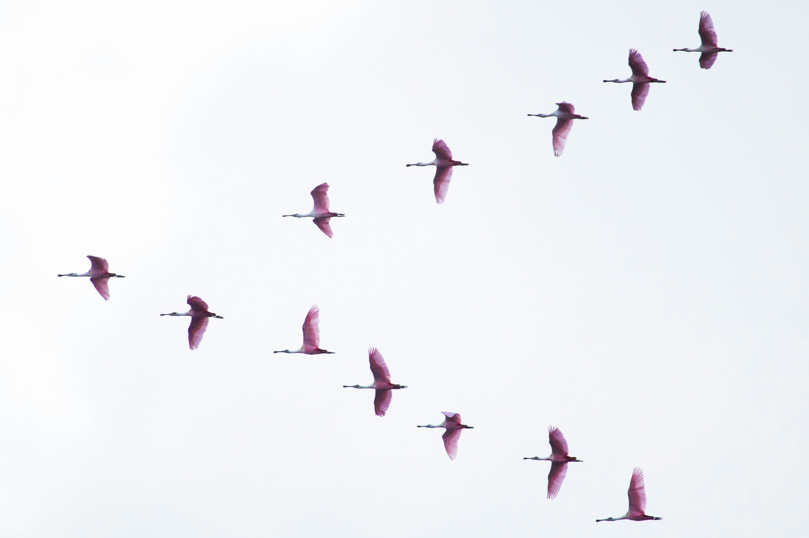

Our group is growing and working to build a supportive and collaborative lab community. There are opportunities at many different career stages to join existing projects and develop new ideas together. If you’re interested in joining, please fill out the interest survey (instead of emailing).
MASTERS
The Bren School offers two Masters degrees in Environmental Science & Management (MESM) and Environmental Data Science (MEDS). Our group is heavily involved in the MEDS program and also advises projects in the MESM program. The MEDS program is growing rapidly and we’re happy to answer any questions. There are opportunities for research in our group as well as co-developing Capstone and Group project proposals.
PhD Students
PhD students can join the group through the Bren School’s PhD program and should reach out via the interest form to establish connections prior to applying. Check out the resources below for tips on navigating the PhD application process!
Postdoctoral researchers
Postdoctoral researchers are especially encouraged to reach out with ideas that could spark fellowship applications. Our group participates in the Bren Global Change Postdoctoral Fellowship which offers opportunities for community building and career development, but check out the resources below for other fellowship opportunities! If our research interests align, please reach out via the interest form.